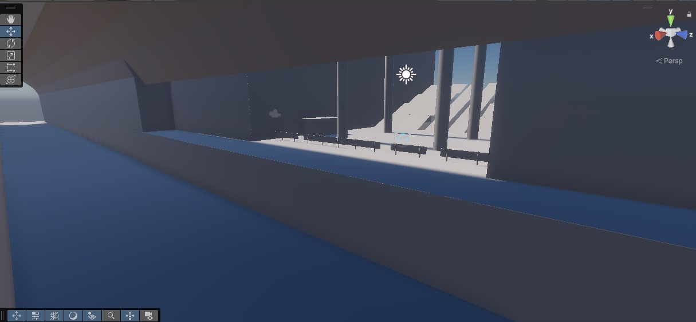

Revenge tastes like syrup
br
Projet de réalité virtuel réalisé en stage chez Studio Kay
Revenge Taste Like Syrup est un FPS en réalité virtuelle situé dans les métros et les rues de Montréal.
Ce projet est l’un des plus grands défis auxquels j’ai fait face. Je devais, en équipe de trois, développer un jeu VR FPS complet pour Studio Kay, en respectant leurs demandes et leurs restrictions.
Ce n’était pas un stage comme les autres, car nous devions créer un jeu pour une compagnie de marketing qui n’avait aucune connaissance en création de jeux. C’était comme si mes coéquipiers et moi formions un nouveau studio et avions pour tâche de créer un jeu pour notre client (Studio Kay).
J’ai beaucoup appris grâce à cette expérience et renforcé plusieurs de mes compétences. J’avais pour tâche de réaliser tout le level design, l’intégration des assets, la gestion et l’organisation du projet sur Unity, ainsi que toutes les phases de testing et d’optimisation, en plus de régler les problèmes présents dans le jeu.
Vidéo explicative
1 : Level Design / Blocking
Dans cette étape, j’ai fait un plan/croquis papier d’un premier niveau. J’ai ensuite réalisé un brouillon sur Unity en créant le niveau avec seulement des blocs et des formes simples, sans texture (blocking). Ce premier plan nous a permis de bien visualiser à quoi le jeu allait ressembler et à quoi nous devions nous attendre. Il nous a ensuite énormément simplifié la tâche pour les prochaines phases de développement. J’ai beaucoup appris à faire le blocking des niveaux, particulièrement pour la section du métro du jeu. Je n’avais jamais fait cela auparavant et j’ai créé un niveau complet en quelques heures seulement.
2 : Résolution de problèmes / Testing
Étant notre première fois à réaliser un jeu de cette envergure, avec peu de temps et une équipe de trois personnes, une tonne de problèmes surgissait. Je devais à chaque fois tester, développer une solution, retester, etc.
C’est l’étape où j’ai le plus appris durant le stage. Nous avions des problèmes de textures, des problèmes HDRP/URP, des programmes C# qui ne fonctionnaient pas, ainsi que des problèmes d’optimisation. J’ai abordé chaque problème avec persévérance et curiosité, ce qui m’a permis de me débrouiller pour régler tous les problèmes présents.
Applications et langages utilisés